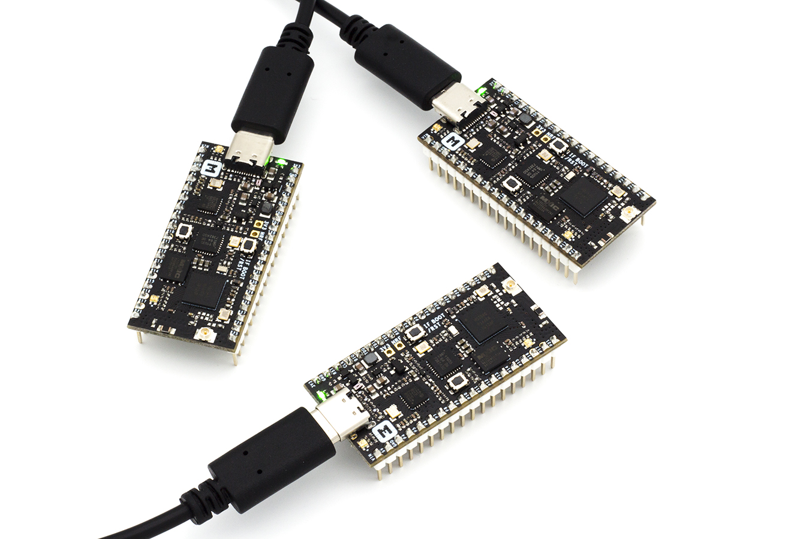
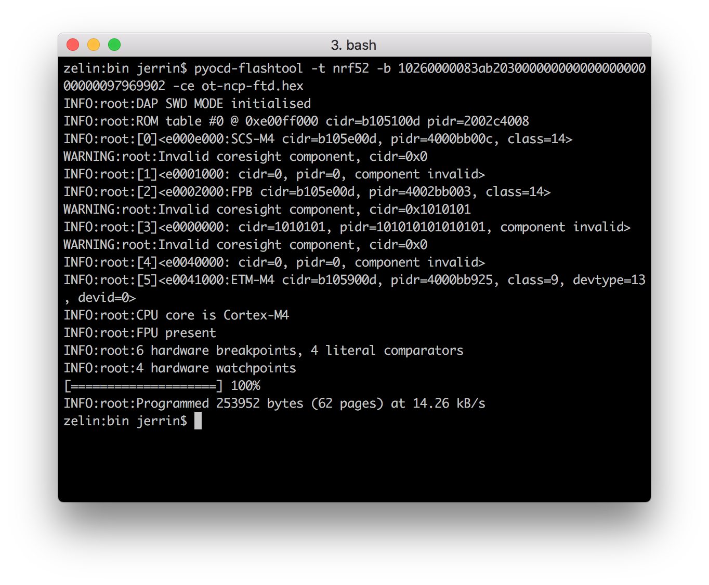
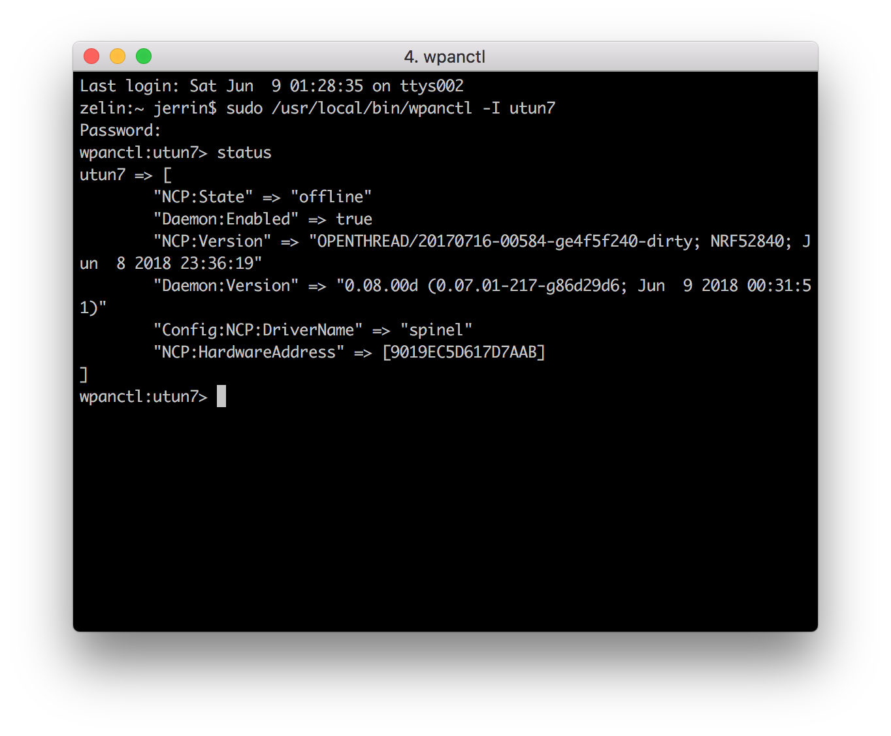

OpenThread
An open-source implementation of Thread® released by Nest¶

Introduction¶
OpenThread is an open-source implementation of the Thread® networking protocol. Nest has released OpenThread to make the networking technology used in Nest products more broadly available to developers, in order to accelerate the development of products for the connected home.
The Thread specification defines an IPv6-based reliable, secure and low-power wireless device-to-device communication protocol for home applications. OpenThread implements all Thread networking layers (IPv6, 6LoWPAN, IEEE 802.15.4 with MAC security, Mesh Link Establishment, Mesh Routing) and device roles, as well as Border Router support.

In the following documentation sections, you'll program OpenThread on nRF52840-MDK, create and manage a Thread network, and pass messages between nodes.

Getting started¶
The following documentation sections provide detailed information about the required software toolchains.
Install ARM GNU Toolchain¶
The GNU Embedded Toolchain for Arm is a ready-to-use, open source suite of tools for C, C++ and Assembly programming targeting Arm Cortex-M and Cortex-R family of processors. It includes the GNU Compiler (GCC) and is available free of charge directly from Arm for embedded software development on Windows, Linux and macOS operating systems.
Download and install the 6-2017-q2-update version. Then make sure to add the path to your toolchain to your OS PATH environment variable:
# in ~/.bash_profile, add the following script export PATH="<path to install directory>/gcc-arm-none-eabi-6-2017-q2-update/bin:${PATH}"
Adding the path makes it possible to run the toolchain executables from any directory using the terminal. To verify that the path is set correctly, type the following in your terminal:
$ arm-none-eabi-gcc --version
Install pyOCD¶
pyOCD is an Open Source python 2.7 based library for programming and debugging ARM Cortex-M microcontrollers using CMSIS-DAP. Linux, OSX and Windows are supported.
The latest stable version of pyOCD may be installed via pip as follows:
$ pip install --pre -U pyocd
Follow this section for more information.
Install wpantund¶
wpantund is a user-space network interface driver/daemon that provides a native IPv6 network interface to a low-power wireless Network Co-Processor (or NCP). It was written and developed by Nest Labs to make supporting Thread connectivity on Unix-like operating systems more straightforward.
wpantund is designed to marshall all access to the NCP, ensuring that it always remains in a consistent and well-defined state.
Follow the wpantund Installation Guide from openthread/wpantund to install wpantund.
Clone OpenThread¶
Clone and install OpenThread:
$ cd ~ $ git clone --recursive https://github.com/openthread/openthread.git $ cd openthread $ ./bootstrap
Specify platform configuration for nRF52840-MDK by adapting the openthread/examples/platforms/nrf52840/platform-config.h file to:
/** * @def UART_HWFC * * UART Hardware Flow Control. * * @brief Possible values: * \ref NRF_UART_HWFC_ENABLED - HW Flow control enabled. * \ref NRF_UART_HWFC_DISABLED - HW Flow control disabled. * */ #ifndef UART_HWFC #define UART_HWFC NRF_UART_HWFC_DISABLED #endif /** * @def UART_PIN_TX * * UART TX Pin. * */ #ifndef UART_PIN_TX #define UART_PIN_TX 20 #endif /** * @def UART_PIN_RX * * UART RX Pin. * */ #ifndef UART_PIN_RX #define UART_PIN_RX 19 #endif
Now you're ready to build and flash OpenThread to the nRF52840-MDK.
Set up the NCP Joiner¶
Build and flash¶
Build the OpenThread nRF52840 example with Joiner functionality. A device uses the Joiner role to be securely authenticated and commissioned onto a Thread network. Always clean the repo of previous builds first by running make clean.
$ cd ~/openthread $ make -f examples/Makefile-nrf52840 clean $ make -f examples/Makefile-nrf52840 JOINER=1
Tip
For more information on building and configuring OpenThread, see Building OpenThread.
Navigate to the directory with the OpenThread FTD NCP binary, and convert it to hex format:
$ cd ~/openthread/output/nrf52840/bin
$ arm-none-eabi-objcopy -O ihex ot-ncp-ftd ot-ncp-ftd.hex
Connect nRF52840-MDK to your computer with a USB cable. Use pyocd-flashtool -l to get the boardId:
$ pyocd-flashtool -l WARNING:root:Unsupported board found 1026 0 => Unknown Board [cortex_m] boardId => 10260000083ab20300000000000000000000000097969902
Flash the OpenThread NCP FTD hex file onto the nRF52840-MDK, using the boardId:
$ pyocd-flashtool -t nrf52 -b 10260000083ab20300000000000000000000000097969902 -ce ot-ncp-ftd.hex

Tip
Label the board NCP so that later you don't confuse the board roles.
Configure wpantund¶
In the NCP design, use wpantund to communicate with and manage the Thread device.
In a terminal window, start wpantund on the serial port with the NCP, creating the interface utun7 and enabling info logs:
$ sudo /usr/local/sbin/wpantund -o Config:NCP:SocketPath /dev/cu.usbmodem14112 \ -o Config:TUN:InterfaceName utun7 \ -o Daemon:SyslogMask " -info"
Tip
To configure wpantund without using command line parameters, modify the /etc/wpantund.conf file.
Output similar to the following is generated upon success:
Jun 9 01:29:49 wpantund[12257] <Notice>: Starting wpantund 0.08.00d (Jun 9 2018 00:31:51) . . . Jun 9 01:29:49 wpantund[12257] <Notice>: SOURCE_VERSION = 0.07.01-217-g86d29d6 Jun 9 01:29:49 wpantund[12257] <Notice>: BUILD_VERSION = 0.07.01-217-g86d29d6 Jun 9 01:29:49 wpantund[12257] <Notice>: Configuration file "/etc/wpantund.conf" read. Jun 9 01:29:49 wpantund[12257] <Notice>: Ready. Using DBUS bus ":1.2" Jun 9 01:29:49 wpantund[12257] <Notice>: Running as root without dropping privileges! Jun 9 01:29:49 wpantund[12257] <Notice>: State change: "uninitialized" -> "offline" Jun 9 01:29:49 wpantund[12257] <Notice>: NCP is running "OPENTHREAD/20170716-00584-ge4f5f240-dirty; NRF52840; Jun 8 2018 23:36:19" Jun 9 01:29:49 wpantund[12257] <Notice>: Driver is running "0.08.00d (0.07.01-217-g86d29d6; Jun 9 2018 00:31:51)" 1:29:49 wpantund[12257] <Notice>: Network is not joinable Jun 9 01:29:49 wpantund[12257] <Notice>: Resetting interface(s). . . Jun 9 01:29:49 wpantund[12257] <Notice>: Finished initializing NCP
Leave this terminal window open so that logs from wpantund can be viewed.
A user-defined interface is required to communicate with the NCP using wpanctl. Open a new terminal window and using wpanctl, connect to the interface you just set up:
$ sudo /usr/local/bin/wpanctl -I utun7 wpanctl:utun7>
Verify build¶
Verify that the NCP is successfully running OpenThread:

Set up the FTDs¶
The other two Thread nodes used in this section are Full Thread Devices (FTDs) on the standard System-on-Chip (SoC) design. They do not use wpantund, and the user manually manages them with the OpenThread CLI.
One device functions as the Commissioner, to securely authenticate and commission devices onto that network. The other device functions as a Joiner that the Commissioner can authenticate to the Thread network.
Build and flash¶
Build the OpenThread FTD example for the nRF52840-MDK, with the Commissioner and Joiner roles enabled:
$ cd ~/openthread $ make -f examples/Makefile-nrf52840 clean $ make -f examples/Makefile-nrf52840 COMMISSIONER=1 JOINER=1
Note
Ideally, you should build OpenThread with only the desired functionality enabled. For example, the FTD Joiner would only use the JOINER=1 switch. For ease of use here, build a single image with both roles so that the image can be used for both FTDs.
Navigate to the directory with the OpenThread Full Thread Device (FTD) CLI binary, and convert it to hex format:
$ cd ~/openthread/output/nrf52840/bin
$ arm-none-eabi-objcopy -O ihex ot-cli-ftd ot-cli-ftd.hex
Connect another nRF52840-MDK to your computer with a USB cable. Use pyocd-flashtool -l to get the boardId:
$ pyocd-flashtool -l WARNING:root:Unsupported board found 1026 WARNING:root:Unsupported board found 1026 0 => Unknown Board [cortex_m] boardId => 10260000083ac27f00000000000000000000000097969902 1 => Unknown Board [cortex_m] boardId => 10260000083ab20300000000000000000000000097969902
$ pyocd-flashtool -t nrf52 -b 10260000083ac27f00000000000000000000000097969902 -ce ot-cli-ftd.hex
Tip
Label the board Commissioner.
Verify build¶
Verify a successful build by accessing the OpenThread CLI using GNU Screen from a terminal window. The nRF52840-MDK boards use a baud rate of 115200.
$ screen /dev/cu.usbmodem142112 115200
In the new window, press Return on the keyboard a few times to bring up the OpenThread CLI > prompt. Check for IPv6 addresses:
> ipaddr fd11:2233:4455:0:99ea:1fe9:acd6:d384 fe80:0:0:0:2003:a240:810f:1598 Done
Set up the FTD Joiner¶
Repeat the above process to flash the third nRF52840-MDK board, using the existing ot-cli-ftd.hex build. Then label the board Joiner.
Open a new terminal window, and then access the OpenThread CLI for the FTD Joiner:
$ screen /dev/cu.usbmodem142412 115200
In this new window, press Return on the keyboard a few times to bring up the OpenThread CLI > prompt. Check for IPv6 addresses:
> ipaddr fe80:0:0:0:d079:7d86:6413:4f4e fd11:2233:4455:0:e839:eb52:f7ec:74e3 Done
Create the Thread network¶
Now that you have all your terminal windows and screens configured, let's create our Thread network. On the FTD Commissioner, configure the network and bring up Thread:
## FTD Commissioner ## ---------------------- > networkname makerdiary Done > extpanid 1122334455667788 Done > panid 0x1122 Done > masterkey 11223344556677881122334455667788 Done > ifconfig up Done > thread start Done
After a moment, check the device state. It should be the Leader. Also get the RLOC16 for future reference.
## FTD Commissioner ## ---------------------- > state leader Done > rloc16 3400 Done
Check the device's IPv6 addresses:
## FTD Commissioner ## ---------------------- > ipaddr fd11:2233:4455:0:0:ff:fe00:fc00 # Leader Anycast Locator (ALOC) fd11:2233:4455:0:0:ff:fe00:3400 # Routing Locator (RLOC) fd11:2233:4455:0:99ea:1fe9:acd6:d384 # Mesh-Local EID (ML-EID) fe80:0:0:0:2003:a240:810f:1598 # Link-Local Address (LLA) Done
Tip
A single Thread node has multiple IPv6 addresses. For more information, see IPv6 Addressing.
The "makerdiary" network is now visible when scanned from other Thread devices.
From wpanctl on the NCP Joiner:
## NCP Joiner ## ---------------- wpanctl:utun7> scan | Joinable | NetworkName | PAN ID | Ch | XPanID | HWAddr | RSSI ---+----------+--------------------+--------+----+------------------+------------------+------ 1 | NO | "makerdiary" | 0x1122 | 11 | 1122334455667788 | 2203A240810F1598 | -59
From the OpenThread CLI on the FTD Joiner:
## FTD Joiner ## ---------------- > scan | J | Network Name | Extended PAN | PAN | MAC Address | Ch | dBm | LQI | +---+------------------+------------------+------+------------------+----+-----+-----+ > | 0 | makerdiary | 1122334455667788 | 1122 | 2203a240810f1598 | 11 | -32 | 244 | Done
If the makerdiary network doesn't appear in the list, try scanning again.
You may note that in both scans, the network seems to be not joinable (Joinable column on the NCP Joiner, J column on the FTD Joiner). This only means that Thread Commissioning is not active on the network. It can still be joined out-of-band, by entering the network master key in the joiner device manually.
Note
In-band commissioning is when network credentials are transferred to the joiner over the radio. Out-of-band commissioning is when they are given to the joiner by other means (for example, manual entry in the OpenThread CLI).
Add the NCP Joiner¶
Let's add the NCP Joiner to the Thread network we just created, using an out-of-band process. Scan for networks on the NCP Joiner:
## NCP Joiner ## ---------------- wpanctl:utun7> scan | Joinable | NetworkName | PAN ID | Ch | XPanID | HWAddr | RSSI ---+----------+--------------------+--------+----+------------------+------------------+------ 1 | NO | "makerdiary" | 0x1122 | 11 | 1122334455667788 | EE7A6D71FB28C60D | -68
To join, set the network master key on the NCP Joiner and join network 1 (the ID in the first column of the scan output):
## NCP Joiner ## ---------------- wpanctl:utun7> setprop Network:Key 11223344556677881122334455667788 wpanctl:utun7> join 1 Joining "makerdiary" 1122334455667788 as node type "end-device" Successfully Joined!
Check the status of the NCP Joiner to verify. It might take a few seconds for all IPv6 addresses to appear in the output.
## NCP Joiner ## ---------------- wpanctl:utun7> status utun7 => [ "NCP:State" => "associated" "Daemon:Enabled" => true "NCP:Version" => "OPENTHREAD/20170716-00650-g631557e8-dirty; NRF52840; Jun 9 2018 15:45:03" "Daemon:Version" => "0.08.00d (0.07.01-217-g86d29d6; Jun 9 2018 00:31:51)" "Config:NCP:DriverName" => "spinel" "NCP:HardwareAddress" => [9019EC5D617D7AAB] "NCP:Channel" => 11 "Network:NodeType" => "end-device" "Network:Name" => "makerdiary" "Network:XPANID" => 0x1122334455667788 "Network:PANID" => 0x1122 "IPv6:LinkLocalAddress" => "fe80::60bd:ff84:2121:344d" "IPv6:MeshLocalAddress" => "fd11:2233:4455::f:b5e:169b:b875" "IPv6:MeshLocalPrefix" => "fd11:2233:4455::/64" "com.nestlabs.internal:Network:AllowingJoin" => false ]
Make note of the IPv6:MeshLocalAddress, you'll use it later.
Get the NCP Joiner's RLOC16:
## NCP Joiner ## ---------------- wpanctl:utun7> getprop Thread:RLOC16 Thread:RLOC16 = 0x3403
Tip
Use the getprop command by itself to list all available properties and their current values.
Back on the FTD Commissioner, check the router and child tables to confirm both devices are part of the same network. Use the RLOC16 to identify the NCP Joiner.
## FTD Commissioner ## ---------------------- > router table | ID | RLOC16 | Next Hop | Path Cost | LQ In | LQ Out | Age | Extended MAC | +----+--------+----------+-----------+-------+--------+-----+------------------+ | 13 | 0x3400 | 63 | 0 | 0 | 0 | 0 | 2203a240810f1598 | Done > child table | ID | RLOC16 | Timeout | Age | LQ In | C_VN |R|S|D|N| Extended MAC | +-----+--------+------------+------------+-------+------+-+-+-+-+------------------+ | 3 | 0x3403 | 240 | 66 | 3 | 86 |1|1|1|1| 62bdff842121344d | Done
Ping the mesh-local address of the NCP Joiner (the IPv6:MeshLocalAddress attribute from the NCP Joiner's status output) to verify connectivity:
## FTD Commissioner ## ---------------------- > ping fd11:2233:4455::f:b5e:169b:b875 > 8 bytes from fd11:2233:4455:0:f:b5e:169b:b875: icmp_seq=2 hlim=64 time=35ms
We now have a Thread network consisting of two nodes, illustrated by this topology diagram:

Commission the FTD Joiner¶
Now let's add the third Thread device to the "makerdiary" network. This time we're going to use the more secure in-band commissioning process. On the FTD Joiner, scan for the network:
## FTD Joiner ## ---------------- > scan | J | Network Name | Extended PAN | PAN | MAC Address | Ch | dBm | LQI | +---+------------------+------------------+------+------------------+----+-----+-----+ > | 0 | makerdiary | 1122334455667788 | 1122 | 2203a240810f1598 | 11 | -32 | 244 | Done
A 0 in the J column indicates that Thread Commissioning is not active on the device.
Let's be specific when commissioning on this next device, and only allow the FTD Joiner to join. Still on the FTD Joiner, get the eui64, so the FTD Commissioner can identify it:
## FTD Joiner ##
----------------
> eui64
31ae3e8e7b87cfd6
Done
On the FTD Commissioner, start the commissioner and specify the eui64 of the device that can join, along with the Joiner Credential. The Joiner Credential is a device-specific passphrase.
## FTD Commissioner ##
----------------------
> commissioner start
Done
> commissioner joiner add 31ae3e8e7b87cfd6 J01NME
Done
Warning
If you get an error when run the commissioner joiner command, stop and restart the commissioner role with commissioner stop and commissioner start, then try the commissioner joiner command again.
Switch to the FTD Joiner, and rescan:
## FTD Joiner ## ---------------- > scan | J | Network Name | Extended PAN | PAN | MAC Address | Ch | dBm | LQI | +---+------------------+------------------+------+------------------+----+-----+-----+ > | 1 | makerdiary | 1122334455667788 | 1122 | 2203a240810f1598 | 11 | -32 | 244 | Done
As indicated by the 1 in the J column, Thread Commissioning is now active on the network. Start the joiner role with the Joiner Credential you just set up on the FTD Commissioner:
## FTD Joiner ##
----------------
> ifconfig up
Done
> joiner start J01NME
Done
Within a minute or so, you get a confirmation of a successful authentication:
## FTD Joiner ##
----------------
>Join success
Warning
If you wait too long (more than a few minutes) to start the joiner role on the FTD Joiner, the commissioner may time out and the join fail. Stop and restart the commissioner and try it again.
Bring up Thread so the FTD Joiner joins the makerdiary network, and immediately check the state and RLOC16:
## FTD Joiner ## ---------------- > thread start Done > state child Done > rloc16 3404 Done
Check the device's IPv6 addresses. Notice that there is no ALOC. That's because this device is not the Leader, nor does it hold an Anycast-specific role that requires an ALOC.
## FTD Joiner ##
----------------
> ipaddr
fd11:2233:4455:0:0:ff:fe00:3404
fe80:0:0:0:7827:55cf:47e4:5907
fd11:2233:4455:0:e839:eb52:f7ec:74e3
Done
Immediately switch to the FTD Commissioner and check the router and child tables to confirm that three devices exist in the makerdiary network:
## FTD Commissioner ## ---------------------- > router table | ID | RLOC16 | Next Hop | Path Cost | LQ In | LQ Out | Age | Extended MAC | +----+--------+----------+-----------+-------+--------+-----+------------------+ | 13 | 0x3400 | 63 | 0 | 0 | 0 | 0 | 2203a240810f1598 | Done > child table | ID | RLOC16 | Timeout | Age | LQ In | C_VN |R|S|D|N| Extended MAC | +-----+--------+------------+------------+-------+------+-+-+-+-+------------------+ | 3 | 0x3403 | 240 | 231 | 3 | 86 |1|1|1|1| 62bdff842121344d | | 4 | 0x3404 | 240 | 49 | 3 | 88 |1|1|1|1| 7a2755cf47e45907 | Done
Important
It's possible that by the time you check the router and child tables, you see two Routers and one End Device (child). If so, don't worry! You did nothing wrong. Continue on to learn why this happened.
Based on the RLOC16, the FTD Joiner has attached to the network as an End Device (child). Here is our updated topology:

Send messages with UDP¶
One of the application services that OpenThread provides is User Datagram Protocol (UDP), a Transport Layer protocol. An application built on OpenThread could use the UDP API to pass messages between nodes in a Thread network, or to other devices in an external network (like the internet, if the Thread network features a Border Router).
UDP sockets are exposed through the OpenThread CLI. Let's use it to pass messages between the two FTDs.
Get the Mesh-Local EID address for the FTD Joiner. We're using this address because it's reachable from anywhere within the Thread network.
## FTD Joiner ## ---------------- > ipaddr fd11:2233:4455:0:0:ff:fe00:fc00 # Leader Anycast Locator (ALOC) fd11:2233:4455:0:0:ff:fe00:f400 # Routing Locator (RLOC) fe80:0:0:0:7827:55cf:47e4:5907 # Link-Local Address (LLA) fd11:2233:4455:0:e839:eb52:f7ec:74e3 # Mesh-Local EID (ML-EID) Done
Start UDP and bind it to a socket for any IPv6 address:
## FTD Joiner ## ---------------- > udp open Done > udp bind :: 1212
Switch to the FTD Commissioner, start UDP, and connect to the socket you set up on the FTD Joiner, using its ML-EID:
## FTD Commissioner ## ---------------------- > udp open Done > udp connect fd11:2233:4455:0:e839:eb52:f7ec:74e3 1212 Done
The UDP connection should be live between the two nodes. Send a message from the FTD Commissioner:
## FTD Commissioner ##
----------------------
> udp send hello-openthread
Done
On the FTD Joiner, the UDP message has been received!
## FTD Joiner ## ---------------- > 16 bytes from fd11:2233:4455:0:0:ff:fe00:3400 49153 hello-openthread
Congratulations!¶
You've created a physical Thread network with nRF52840-MDK!
Reference¶
- Build a Thread network with nRF52840 boards and OpenThread - covers all the steps in this documentation
- openthread.io
- github.com/openthread
- Thread Primer — covers all the Thread concepts in this documentation
- OpenThread CLI reference
- OpenThread UDP CLI reference
- wpanctl properties reference
- OpenThread UDP API reference
- GNU Screen quick reference
License¶
Content on this pages is licensed under the Creative Commons Attribution 3.0 License. Origin works by Jeff Bumgardner at Google.
Create an Issue¶
Interested in contributing to this project? Want to report a bug? Feel free and click here: